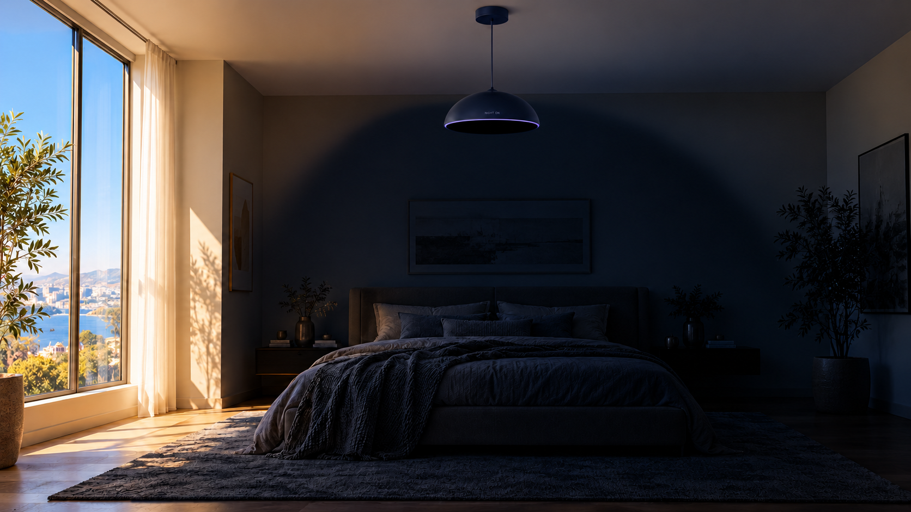
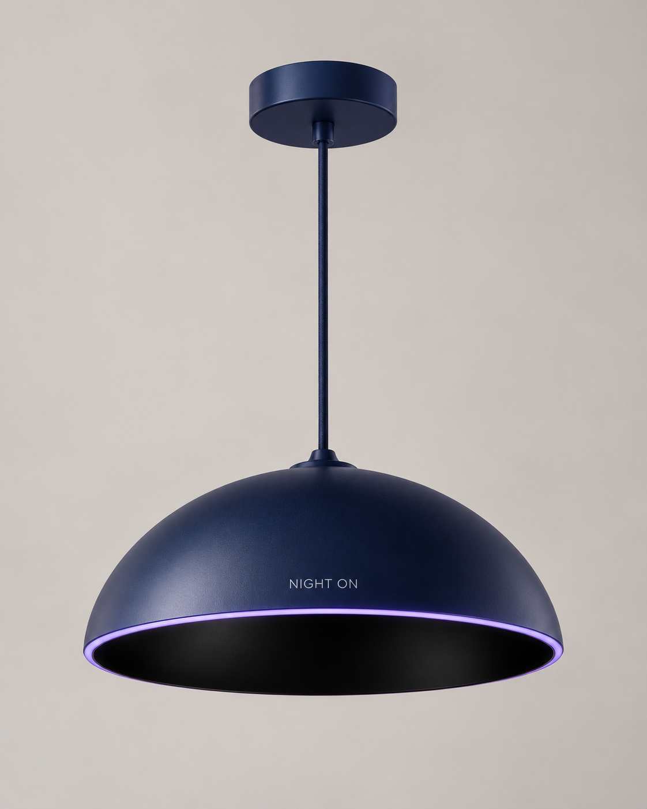
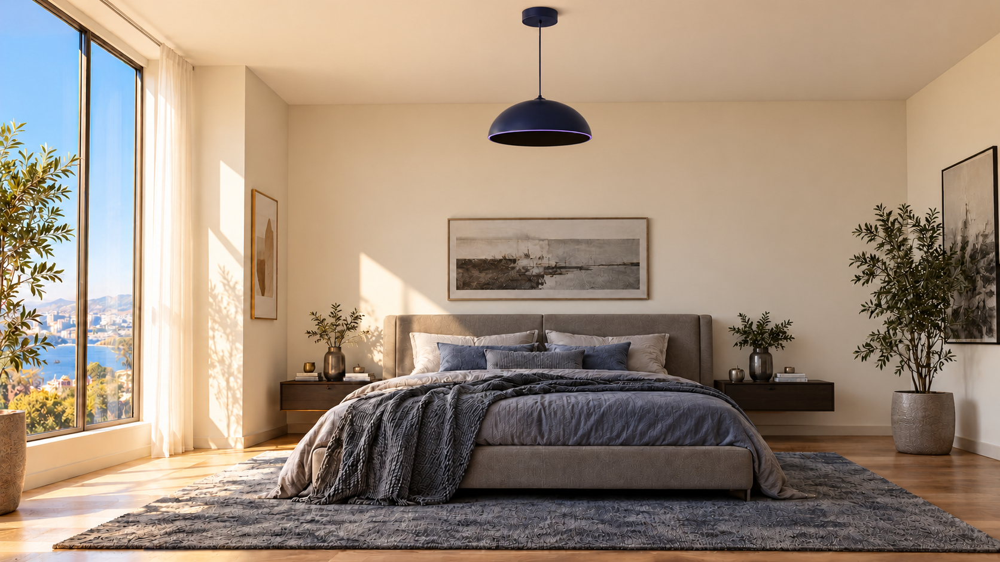
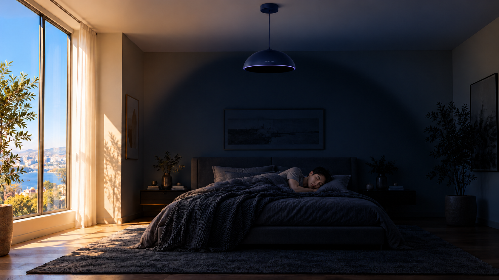
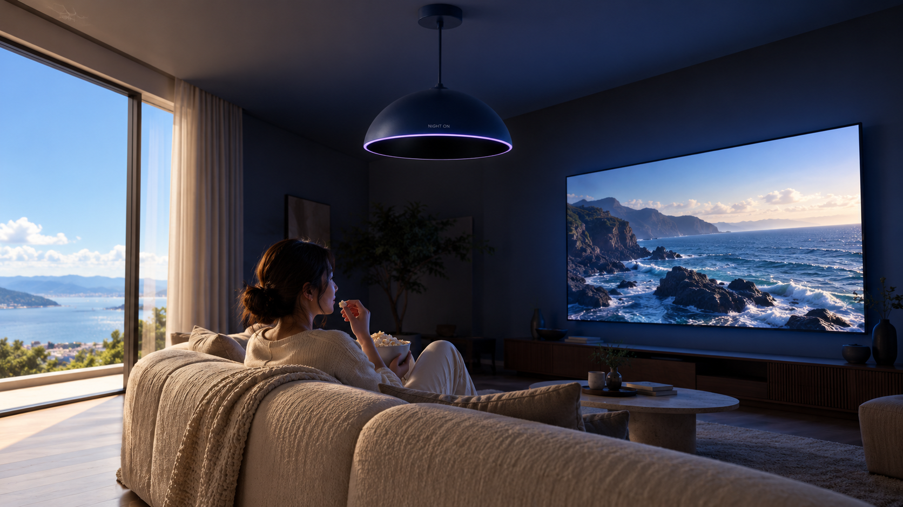

NIGHT ON · 빛 흡수 천장 전등
전등을 켰더니,
밤이 되었다.
밝은 낮에도 원하는 공간에 나만의 밤을 만드는 천장형 빛 흡수 전등.
가상 제품 콘셉트 · AI 생성 이미지

제품 소개
불을 켜듯,
밤을 켜세요.
창가의 채광은 남기고, 필요한 공간에 어둠을 만드는 새로운 전등을 상상했습니다.
- 공간의 빛 흡수
- 리모컨이나 벽면 스위치를 켜면 주변의 빛을 흡수해 원하는 공간에 어둠을 만듭니다. 방을 비추는 조명 기능은 없습니다.
- 강도·범위 조절
- 어둠의 강도와 적용 범위를 공간과 상황에 맞게 고릅니다. 침대 주변만, 또는 방 전체로.
- 예약 종료
- 원할 때만 쓰는 선택 기능입니다. 정한 시간이 지나면 공간을 원래 밝기로 되돌려, 커튼을 다시 열 필요가 없습니다.
- 시네마 모드
- 외부 빛은 흡수하면서 TV·프로젝터 화면의 빛은 그대로 유지합니다.
위 기능은 가상 제품의 설정이며, 실제 기술·사양·효능을 검증한 내용이 아닙니다.
낮과 밤
같은 공간,
내가 선택하는 밤.
커튼은 그대로, 창가의 채광도 그대로. 전등을 켜면 침대 주변만 조용히 밤이 됩니다.


낮의 휴식
세상은 아침.
나는 퇴근.
창밖의 시간과 내 휴식 시간이 달라도, 원하는 공간에 밤을 켜는 상상.
야간 근무를 마치고 돌아온 아침. 커튼을 여닫지 않아도 침대 주변만 조용히 어두워집니다. 창가의 채광은 그대로 둔 채로.

홈시네마
오후 2시,
심야 상영.
시네마 모드로 외부 빛은 줄이고, 화면의 빛은 유지합니다.
밝은 오후에도 거실이 상영관이 됩니다. 창문을 가리지 않고, 화면 주변만 어두워지는 설정입니다.
시네마 모드는 가상 제품의 기능 설정입니다.
사용 방법
밤을 켜고,
내 생활에 맞게 조절하세요.
리모컨 또는 벽면 스위치로 시작하고, 어둠의 범위와 모드를 고릅니다. 끝나는 시간은 원할 때만 예약합니다.
-
01
밤 켜기
리모컨 또는 벽면 스위치로 빛 흡수를 시작합니다.
-
02
범위·어둠 조절
어둠의 강도와 적용 범위를 공간에 맞게 고릅니다.
-
03
모드 선택
기본 모드, 또는 화면 빛을 남기는 시네마 모드.
-
04
예약 종료 선택
원할 때만 끝나는 시간을 정해 두세요. 시간이 지나면 공간이 원래 밝기로 돌아오고, 예약하지 않으면 직접 끌 때까지 밤이 유지됩니다.
가상 제품의 조작 방식 설정입니다. 실제 배선이나 시공 안내가 아닙니다.
FAQ
자주 묻는 질문
실제 판매하는 제품인가요?
개인 마케팅 프로젝트로 기획한 가상 제품입니다. 실제 판매·결제 기능은 제공하지 않습니다.
커튼을 닫아야 하나요?
커튼이 열린 상태에서도 필요한 공간의 빛을 흡수하는 설정입니다.
일반 전등처럼 방을 밝힐 수도 있나요?
본 기획은 빛 흡수 전용 제품입니다. 라벤더 링은 작동 상태를 알리는 표시등입니다.
화면도 어두워지나요?
시네마 모드는 TV·프로젝터 화면의 빛을 유지한다는 가상 설정입니다.
어떻게 조작하나요?
리모컨 또는 벽면 스위치로 작동하고, 어둠 강도·범위와 예약 종료를 선택하는 방식으로 기획했습니다.